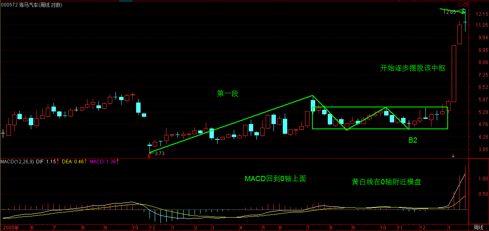

(2007-01-23 15:13:13)
发现很多人把以前的东西都混在一起了，所以先把一些问题再强调一下。
所谓的“吻”，是和均线系统相关的，而均线系统，只是走势的一个简单数学处理，说白了，离不开或然率，这和后面所说的中枢等概念是完全不同的，所以一定要搞清楚，不要把均线系统和中枢混在一起了。【韶山映山红】均线系统是或然的，中枢系统才有必然。最早折腾的十几课都是逗你玩儿，难怪说那是幼儿园水平。幼儿园，幼稚园，宝宝心里苦，宝宝什么也不说。】
均线系统，本质上和MACD等指标是一回事，只能是一种辅助性工具。【韶山映山红】MACD本质上也属于均线衍生的指标。】由于这些工具比较通俗，掌握起来比较简单，如果不想太深研究的，可以先把这些搞清楚。【韶山映山红】MACD也是小宝宝的学步车，啥时候不需要它了，啥时候就真的会走路了。】
但“学如不及”，对事情如果不能穷根究底，最终都是“犹恐失之”的，因此，最终还是要把中枢等搞清楚。【韶山映山红】知其然，难免“犹恐失之”，穷根究底，知其所以然，才能解决“学如不及”的问题。】
MACD，当一个辅助系统，还是很有用的。【韶山映山红】MACD作为独立系统，和其他技术指标一样，属于简单的数学处理，离不开或然率，由于比较通俗，掌握起来比较简单，当一个辅助系统，还是很有用的。】
MACD的灵敏度，和参数有关，一般都取用12、26、9为参数，这对付一般的走势就可以了，【韶山映山红】技术指标的参数设置，对付一般的走势都可以。】但一个太快速的走势，1分钟图的反应也太慢了，如果弄超短线，那就要看实际的走势，【韶山映山红】面对太快的走势，不是调整MACD的参数，而是“看实际的走势”。】例如看600779的1分钟图，从16.5上冲19的这段，明显是一个1分钟上涨的不断延伸，这种走势如何把握超短的卖点？【韶山映山红】1分钟上涨的不断延伸，无法区间套寻找背驰，更无法辨别小转大。】
【韶山映山红】600779水井坊。 】
不难发现，MACD的柱子伸长，和乖离有关，大致就是走势和均线的偏离度。【韶山映山红】MACD指标中，白线DIF就是12日EMA均线和26日EMA均线的差值，黄线DEA就是白线DIF的9日EMA均线，柱子MACD就是黄白线差值的2倍。所以准确的说，柱子MACD不是走势和均线的偏离度，而是短期走势和长期走势的偏离度。】打开一个MACD图，首先应该很敏感地去发现该股票MACD伸长的一般高度，【韶山映山红】MACD伸长的一般高度，也就是短期均线对长期均线的偏离能力，是该股票股性的一个指标。可以纳入股性的专题，以后研究。】
在盘整中，一般伸长到某个高度，就一定回去了，【韶山映山红】短期均线对长期均线的偏离因盘整而减少。】而在趋势中，这个高度一定高点，【韶山映山红】离开震荡区间，就是对震荡的偏离，所以柱子长度要大一些。】那也是有极限的，【韶山映山红】长期均线也会跟着偏离，所以相对差值的增长有极限。】一般来说，一旦触及这个乖离的极限，【韶山映山红】特别是两次或三次上冲该极限，就会引发因为乖离而产生的回调。【韶山映山红】乖离的极限是怎么产生的？是短期相对长期的拉升力度导致的，多次冲击一个极限，就成为了偏离力度的表征，可以视为股性的一种表达方式。】这种回调因为变动太快，在1分钟上都不能表现其背驰，所以必须用单纯的MACD柱子伸长来判断。【韶山映山红】短期均线因为迟滞而失真，不再跟随走势变化，也就出现了K线急剧变化而柱子不变的现象。】
注意，这种判断的前提是1分钟的急促上升，其他情况下，必须配合黄白线的走势来用。【韶山映山红】MACD的灵敏度足以反映一般情况下走势的动态，只有短期均线失真的时候才分析MACD柱子的极限问题。】
从该1分钟走势可以看出，17.5元时的柱子高度，是一个标杆，后面上冲时，在18.5与19元分别的两次柱子伸长都不能突破该高度，虽然其形成的面积大于前面的，但这种两次冲击乖离极限而不能突破，就意味着这种强暴的走势，要歇歇了。【韶山映山红】问题是当下如何掐准这个点。★以后研究。】
【韶山映山红】若禅精舍（陈秋明）批注：
学如不及，犹恐失之。不能深入理解各种表面现象的成因，那么始终会有犹豫与恐惧。对于均线的吻和macd的回抽零轴之类，都是走势的结构，在指标上的体现，大多数情况下是符合这种规律的，例如一个中枢，往往就对应某级别的长短均线交叉，但如果是一个奔走型的中枢则不一定，macd也是同样的，下跌或者盘整都可以让黄白线回抽零轴，有的下跌深了，黄白线甚至到零轴以下。这些都不是究竟，在分析中可以用均线和macd来划分走势，但必须是特定的走势形态才可以。
下跌中，如果价格离均线太远，就会引发反弹，上涨中也一样，偏离ma5太远的走势，都要等ma5上来或者主动回调到ma5附近，这就是乖离。乖离率有专门的指标：BIAS，这里说的乖离，指的是macd的伸长高度，走势不可能一直保持与均线较大的距离，这就是乖离的意思。
】
还有一种，就是股票不断一字涨停，这时候，由于MACD设计的弱点，在1分钟、甚至5分钟上，都会出现一波一波类似正弦波动的走势，【韶山映山红】“MACD设计的弱点”：以12EMA短期均线和26EMA长期均线为计算依据，在一字板的时候都会失真。】这时候不能用背弛来看，最简单，就是用1分钟的中枢来看，只要中枢不断上移，就可以不管。【韶山映山红】这时候缠论的初始化还是三根最低级别K线的重叠，所以把一字板视为1分钟的中枢。】直到中枢上移结束，就意味着进入一个较大的调整，【韶山映山红】如何判断“中枢上移结束”？所谓中枢上移，也就是上涨趋势的延续，平常情况下的判别标准是趋势背驰。在连续一字板的情况下，如何判断？★以后研究。】然后再根据大一点级别的走势来判断这种调整是否值得参与。【韶山映山红】这里的“是否值得参与”要区分持股和持币两种情况。“直到中枢上移结束，就意味着进入一个较大的调整，”那么从持股者的角度，意味着一旦打开涨停就要先出来，然后如果还想参与，就以持币者的角度分析。而从持币者的角度看，不要抢板，等打开涨停看“大一点级别的走势”再做判断。】
如果用MACD配合判断，就用长一点时间的，例如看30分钟。【韶山映山红】像下面图例的盘中打开涨停又封上，如何分析中枢？★以后研究。】一般来说，这种走势，其红柱子都会表现出这样一种情况，就是红柱子回跌的低点越来越低，最后触及0轴，甚至稍微跌破，然后再次放红伸长，【韶山映山红】下图，找到20个一字板的实例。第6个一字板红柱子开始有跌破0轴，然后红柱子高点开始增高。】
这时候就是警告信号，如果这时候在大级别上刚好碰到阻力位，一但涨停封不住，出现大幅度的震荡就很自然了。【韶山映山红】第7个一字板之后股价翻倍，所以是个“警告信号”。连续涨停或者急拉猛涨的时候，必须快速通过阻力位，否则会震荡。震荡消耗多空力量，之后又可能重新选择方向。】
例如600385，在2.92那涨停，MACD出现一点的绿柱子，然后继续涨停，继续红柱子，
【韶山映山红】600385山东金泰。2.92的前一天收盘时“MACD出现一点的绿柱子”。】
而3.28元是前期的日线高位，结果3.22涨停一没封住，就开始大幅度的震荡。
注意，如果这种连续涨停是出现在第一段的上涨中，即使打开涨停后，震荡结束，形成一定级别的中枢后，往往还有新一段的上涨，必须在大级别上形成背驰才会构成真正的调整，【韶山映山红】关注大级别的背驰段，寻找小级别的背驰点，而不是傻等大级别的背驰点。】因此，站在中线的角度，上面所说的超短线，其实意义并不太大，有能力就玩，没能力就算了。关键是要抓住大级别的调整，不参与其中，这才是最关键的。【韶山映山红】缠师的语言习惯和我们不同，“抓住大级别的调整”应该说：识别大级别的调整，卖出离场。】
此外，一定要先分清楚趋势和盘整，然后再搞清楚背驰与盘整背驰。盘整背驰里的三种情况，特别是形成第三类买点的情况，一定要搞清楚。【韶山映山红】这里说的“盘整背驰里的三种情况”是指：没离开中枢，离开中枢回踩进入中枢，离开中枢回踩不进入中枢。】
注意，盘整背驰出来，并不一定都要大幅下跌，否则怎么会有第三类买点构成的情况。【韶山映山红】这里说的盘整背驰是指中枢离开段的盘整背驰，“并不一定都”，意味着，盘整背驰出来，正常情况下，并不形成第三类买点，而是跌回中枢区间。这时候，离开段和前面同向段是否有abc盘整背驰是更重要的判断依据。】而趋势中产生的背驰，一定至少回跌到B段中，这就可以预先知道至少的跌幅。【韶山映山红】盘整背驰只有形态分析，趋势背驰有力度分析。】前提是，没有小转大或者小级别延伸破坏大级别背驰。】
对背驰的回跌力度，和级别很有关系，如果日线上在上涨的中段刚开始的时候，MACD刚创新高，红柱子伸长力度强劲，【韶山映山红】“上涨的中段”，是指上涨趋势第一个中枢的离开段开始的走势。】这时候5分钟即使出现背驰，其下跌力度显然有限，所以只能打点短差，甚至可以不管。【韶山映山红】日线中枢上移的时候，当下是30分钟向上的走势，即使出现5分钟背驰，也是小级别背驰，背驰后可能形成30分钟中枢，然后转折的可能性很小，中继的可能更大，盘整的向下力度有限，除非这个新的30分钟中枢之后有向下移动。】而在日线走势的最后阶段，特别是上涨的延伸阶段，一个1分钟的背驰足以引发暴跌，【韶山映山红】“上涨的延伸阶段”，是指上涨趋势最后一个中枢的离开段。这种情况下小转大形成下跌趋势的概率很大。还有可能直接发生低级别、大幅度的下跌。】所以这一点必须多级别地综合来考察，绝对不能一看背驰就抛等跌50%，世界上哪里有这样的事情。【韶山映山红】多级别联立做分析。低位先买后卖，小级别买大级别卖，保留仓位，小买错也关系不大。高位先卖后买，小级别卖大级别买。“分析图形，要从高看到低。低级别走势的意义，是在高级别意义的彰显后才能彰显。”】
一般来说，一个标准的两个中枢的上涨，【韶山映山红】a+A+b+B+c。】
在MACD上会表现出这样的形态，就是第一段，MACD的黄白线从0轴下面上穿上来，【韶山映山红】a。】
在0轴上方停留的同时，形成相应的第一个中枢，【韶山映山红】a+A。】
同时形成第二类买点，其后突破该中枢，【韶山映山红】这时候的第二类买点是指中枢震荡的最后一次回踩。】MACD的黄白线也快速拉起，【韶山映山红】a+A+b。】
这往往是最有力度的一段，【韶山映山红】标准的两个中枢的上涨，a+A+b+B+c，b往往是最有力度的一段。反过来说，如果b走不出有力度的一段，形成趋势的可能性就降低了。】
一切的走势延伸等等，以及MACD绕来绕去的所谓指标钝化都经常出现在这一段，【韶山映山红】指标钝化是交易技术分析术语，意为技术指标形态发生粘结，导致该指标失去指示意义。MACD绕来绕去是说黄白线反复出现金叉死叉，却并没有走势的转折。这个钝化实际上正是低级别背驰的表现。】
这段一般在一个次级别的背驰中结束，然后进入第二个中枢的形成过程中，【韶山映山红】这个“次级别的背驰”不是次级别走势的内部背驰，而是次级别的abc盘整背驰，所以能够判断要形成中枢。】
同时MACD的黄白线会逐步回到0轴附近，【韶山映山红】a+A+b+B。中枢震荡将黄白线会拉回到0轴附近。】
最后，开始继续突破第二个中枢，MACD的黄白线以及柱子都再次重复前面的过程，【韶山映山红】a+A+b+B+c。c对B的离开，拉起黄白线，再次重复前面b走势的过程。】
但这次，黄白线不能创新高，或者柱子的面积或者伸长的高度能不能突破新高，出现背驰，这就结束了这一个两个中枢的上涨过程。【韶山映山红】c的力度比b小，就会体现在MACD的形态上。】
【韶山映山红】从MACD的角度素描“标准的两个中枢的上涨”。黄白线高度、柱子面积、柱子高度都是判断依据。】
明白这个道理，大多数股票的前生后世，一早就可以知道了。【韶山映山红】趋势的“前生”，中阴阶段之后才有“后世”。】
用最近涨得最厉害的一个股票来说明，000572。【韶山映山红】000572金盘股份，2007-01-12变更为海马股份，2011-05-12变更为海马汽车。】该股票的力度，其实是和他在日线与周线上出现双重的第二类买点有关，相应地，就有了MACD双重在0轴停留形成第一个中枢的情况。
在周线上，该股从2005.12.09到2006.07.14，形成第一段，同时MACD也回到0轴上面。其后就开始形成第一个中枢，最终在2006.11.17形成第二类买点，同时，黄白线在0轴附近横盘。然后，开始逐步摆脱该中枢，黄白线也逐步拉起。【韶山映山红】这里的二买不是次级别的第一次回踩，而是中枢的最后一次回踩。】

在日线上，这个过程也是一样的，2006.11.13到2006.12.06，形成日线上的第一段，同时MACD回到0轴上面。【韶山映山红】日线级别的a。】然后三段回拉在2007.01.04结束，形成第一个中枢，【韶山映山红】日线级别的a+A。】其后突破中枢，MACD在0轴附近拉起，摆脱第一个中枢。【韶山映山红】日线级别的a+A+b。】
该股以后的走势就很简单了，首先形成一个至少是日线级别的新中枢，同时MACD回抽0轴，【韶山映山红】日线级别的a+A+b+B。】然后再突破，出现背驰，【韶山映山红】日线级别的两中枢上涨趋势a+A+b+B+c，构成周线级别的a。】构成一个大调整，从而导致一个至少周线以上级别的中枢，使得MACD出现回拉0轴，【韶山映山红】周线级别的a+A。】然后再拉起来，出现背驰，【韶山映山红】周线级别的a+A+b。】其后的调整就大了去了，至少是月线级别的。【韶山映山红】周线级别形成a+A+b+B的趋势就困难了，所以这里说的是b走势背驰之后，调整，使得A中枢扩张升级到月线级别。】
必须注意，MACD在0轴附近盘整以及回抽0轴所形成的中枢，不一定就是相应级别的中枢，而是至少是该级别的中枢。【韶山映山红】反过来说，中枢震荡会形成两种MACD形态：在0轴附近盘整，回抽0轴。】不能拉回0轴的本级别中枢，可以通过次级别的MACD形态去辅助辨别。】MACD双回拉与盘整。可以做个专题，以后研究。】
例如日线MACD的0轴盘整与回拉，至少构成日线的中枢，但也可以构成周线的中枢，这时候就意味着日线出现三段走势。【韶山映山红】这里说的中枢相当于笔中枢的级别。“日线MACD的0轴盘整与回拉，至少构成日线的中枢”，也就是日线笔中枢，也可能是日线的三段构成的周线中枢。】
【韶山映山红】周线上的黄白线拉回0轴。】
【韶山映山红】日线上的黄白线0轴盘整。】
今天的走势没什么特别的，就是回补缺口，【韶山映山红】只有回补缺口的动作，没有完成回补。】

由于2870触及，因此还存在继续演化成大级别中枢的情况，明天，继续震荡也是很正常的。【韶山映山红】2870是前面中枢震荡的高点。触及了，就暂时不能看做中枢移动。】

目前一个最简单的判断，就是看5日线，只要该线不破，就问题不大，否则，一个大级别的中枢延续是逃不掉的。【韶山映山红】这时候已经走出4K的上涨，日线MA5已经上扬，对缺口的回踩没有补缺，而且当天就反弹，所以这时候期待还是离开段。】
目前，能让大盘摆脱这种不好走势的，【韶山映山红】摆脱大级别的中枢延续。】关键是看金融股了，由于兴业这破银行的发行价高高在上，你让金融股怎能不躁动？【韶山映山红】601166兴业银行。2007-02-05上市。10亿股。发行价15.98元。】已经说过多次，银行股中线还早着，你看看还有多少银行要回来上市，春节以后，中信要回来，后面什么建行、交行之类的，多了去了。【韶山映山红】601998中信银行，2007-04-27上市，23亿股，发行价5.80元。 601939建设银行，2007-09-25上市，2336.9亿股，发行价1.00元。 601328交通银行，2007-05-15上市。31.9亿股，发行价7.90元。002142宁波银行，2007-07-19上市，4.5亿股，发行价9.20元。 601009南京银行，2007-07-19上市，6.3亿股，发行价11.00元。 601169北京银行，2007-09-19上市，62.3亿股，发行价1.00元。】
个股没什么说的，连军工、有色等老板块都开始再次活跃，无非说明了，这大盘即使短线有些震荡，中线还是问题不大的。【韶山映山红】板块轮动和大盘的关系。以后研究。】
2007-1-23 15:28
[匿名] 花蝴蝶 2007-01-23 15:20:30
缠姐好!!今天好紧张的.
==
有什么紧张的？补缺口这事情昨天不早说了？关键要设计好自己的操作节奏。如果短线没时间，那就算了。
2007-1-23 15:29
[匿名] stone 2007-01-23 11:34:13
破2870了，按LZ所说，调整大了，是不是应该出来了？
[匿名] 罗锅 2007-01-23 11:37:14
早上高开就该先出来！数学妹妹不是说了！最迟周四前一定回试考验缺口！俺说现在只是调整！好股票是不怕的！看着5分钟背弛就可以回补了！
===
今天为这位带个大红花，因为他至少在中午提到要回补，证明对短线的节奏已经有一点感觉了。

短差就是来回弄出来的，抛了不回补，不如不抛。
关键是要找对回补的位置。
2007-1-23 15:34
[匿名] 猫猫 2007-01-23 15:30:48
博主姐姐，还有问题。趋势和盘整的问题，某级别中趋势的中枢和此级别盘整的中枢是否是同一个级别的？我感觉中枢和盘整的概念很难弄清楚，能不能帮我解析下
==
连接两同向趋势的盘整中枢，当然要比那两趋势的中枢级别高，否则就归到其中一个趋势去了。【韶山映山红】a+A+b，A的级别比a、b要高。】
搞明白中枢就可以，盘整不用管，只要把中枢的确立、延伸、扩展、新生等搞明白，自然就明白盘整。【韶山映山红】盘整本身并没有什么可当下分析的，站在本级别的角度，做的就是中枢分析。】
2007-1-23 15:37
[匿名] 缠fans 2007-01-23 15:30:47
缠姐，今日大盘没碰1月10日2841.74中枢上限，没补缺口，是否意味着有惊无险，可以找买点介入了。
==
节奏全错，应该是早上出，下午补。【韶山映山红】中枢的离开段背驰的时候出，三买确认后回补。】
这逻辑很明确的。因为一定要去回试缺口，所以早上一开2970，肯定意味着有至少100点的回试空间，这不就是最好的短差机会？【韶山映山红】早上高开了，为什么“一定要去回试缺口”？是必然还是或然？离开中枢区间有回拉的动力，前日缺口有回拉的动力，本日跳空高开再一次回拉的动力，所以回踩的概率非常大。但是，究竟是必然还是大概率的或然？★可以做个专题，以后研究。】
注意，短差可以是买了抛，也可以是卖了回补，这钱和股票一定要不断流动，这才是弄短差，否则就干脆弄长线，或者至少等日线背驰再说。【韶山映山红】打短差有做多和做空两个方向。】
2007-1-23 15:41
[匿名] 大盘 2007-01-23 15:41:18
今天虽然回探2869高点（中枢三段的高高点），但是好像没有触及日线中枢高点2840点，不知是不是我对中枢的判断还是有错？望楼主指点
==
由于触及最高点，使得存在演化成大中枢的危险，但由于回试如果是两次的，那只要下一次不跌破这个位置，那就会使得中枢的脱离得到确认。【韶山映山红】“回试如果是两次的”，意味着，这一次已经被认可是一次回试，也就是说，这个回踩补缺构成了第三类买点。如果下一次不跌破这个位置，就会使得中枢的脱离得到确认，也就化解了演化成大中枢的危险，也就是说，在更大级别看，没有触及GG的第二次回踩，就没有完成下上下的后一个下，不满足中枢划分的要求，也就没有完成大中枢。所以，这里说的“回试如果是两次的”，是指构成本级别回踩的那个走势的最低要求的两次回试。】

所以，现在是一个震荡时期，站在短线的角度，是最好玩的，上不去就给，跌下来只要不有效跌破2870，就买回来。【韶山映山红】什么是“有效跌破”？后面的问答里说了，有效跌破，就是次级别下去，次级别反拉不能重新上来。】
而一旦确认回试站稳，那就单边上去，或至少是震荡上去了，下面这个中枢就见不着了。【韶山映山红】怎样算是“确认回试站稳”？】回踩不新低或者新低盘背。】
2007-1-23 15:47
[匿名] 猫猫
博主姐姐，问问题
1.假定已经存在一个上升趋势中枢A，形成这个中枢的最后一个次级别走势直接下来，然后出现三个次级别重叠，下A下方形成一个新的中枢B，那AB是不是已经形成一个新的下跌趋势了？还是要再在B下方形成一个C中枢才能认为形成趋势了？
2.每个走势的端部是否都应该存在一个中枢？
谢谢
2007-1-23 15:23
[匿名] 猫猫
2.每个走势的端部是否都应该存在一个中枢？
2007-1-23 15:44
[匿名] 猫猫 2007-01-23 15:44:36
2.每个走势的端部是否都应该存在一个中枢？
==
不一定，【韶山映山红】转折形成中阴中枢就有端部的中枢，否则就没有。】如果是突然跳空上来或下去，可以只在下面形成中枢，【韶山映山红】不知道缠师说到是顺势跳空还是逆向跳空。】中枢的位置没有什么固定的，哪里都可以，【韶山映山红】对走势类型来说，判断的依据是中枢的数量和排列顺序，而不是中枢的位置。哪里都有可能，一定不能预设立场。】但只要是完整的走势类型，就一定至少有一个中枢。【韶山映山红】否则就是更低级别的走势。】
2007-1-23 15:48
[匿名] 如初见 2007-01-23 15:46:15
000629，1分钟图，14：54出现背弛，见新高、面积小、回抽0轴、红柱短，但又不确定，缠MM帮看看，如果是，明天开盘出一半，多谢
【韶山映山红】000629新钢钒。2007-04-02变更为攀钢钢钒，2010-04-30变更为攀钢钒钛。】

===
你要经常考虑的是，大的级别是什么，才考虑1分钟的，【韶山映山红】1分钟笔级别走势主要用来递归或区间套分析。】除了最后的冲刺以及权证，一般都没必要看1分钟的，【韶山映山红】权证和期货的走势分析级别要低一些。】当然，1分钟背弛，在盘中肯定有回跌，但关键是这种回跌如果不及时补回来，一下就过去了。【韶山映山红】1分钟笔级别走势缺少判断依据，显得更莫测。】所以，除非你每天每秒都趴在股市里，否则太短的短线不一定要弄。【韶山映山红】太短的短线只适合T+0的操作。】
短线是用来摊成本的，要挣大钱，关键是看中线。【韶山映山红】打短差的短线操作是用来摊成本的，赚钱还要操作大级别。】
例如本ID的药，你看1分钟背驰，只要你手脚慢点，一定没机会补回来。至少到今天，都是这样。【韶山映山红】实际上这就是背了又背。小级别的背驰之后，还没有展开反向走势的转折，就小级别延伸了。】
【韶山映山红】000999三九医药，2010.02.24变更为华润三九。】
越难弄短差的，越是中线的好股票，很多人总是说，某某股票曾买过，抛了还涨1倍、2倍、3倍，这种事情少见吗？【韶山映山红】没有足够幅度的震荡，意味着多空分歧有限，被意见一致的力量控盘的可能性更大。】
2007-1-23 15:56
[匿名] 大盘 2007-01-23 15:41:18
今天虽然回探2869高点（中枢三段的高高点），但是好像没有触及日线中枢高点2840点，不知是不是我对中枢的判断还是有错？望楼主指点
------------
缠中说禅 2007-01-23 15:47:04
由于触及最高点，使得存在演化成大中枢的危险，但由于回试如果是两次的，那只要下一次不跌破这个位置，那就会使得中枢的脱离得到确认。所以，现在是一个震荡时期，站在短线的角度，是最好玩的，上不去就给，跌下来只要不有效跌破2870，就买回来。而一旦确认回试站稳，那就单边上去，或至少是震荡上去了，下面这个中枢就见不着了。
-----
[匿名] 大盘 2007-01-23 15:55:41
有点明白了，要是下一个30分钟的下跌走势完成后的低点高过2870，应该基本就是继续上升和震荡上升（在2870上震荡）的大盘行情了
===
对，【韶山映山红】下一个30分钟的向下笔完成后的低点高过2870，就没有完成中枢扩张，应该基本就是继续上升或者震荡上升。】

但操作上不能这样，而是冲搞只要没力，也就是短线背驰，就出来，回试不破就回补，而不是看最后的结果，如果是结果破了，那时候再操作，是不是有点太晚？【韶山映山红】背驰就是转折的标志，不一定要等到结果完全呈现。】
不过一定要注意，本ID这里说的是小资金的人，天天可以全仓进进出出的，对于资金大的，只能部分的弄短差来降低成本，这和资金量有关系，【韶山映山红】部分仓位做短差是因为资金容量问题。小资金做短差就可以是全仓。】而且更和你手中的股票有关系，有些股票，大盘跌了，涨得更兴奋，所以短差是要具体看个股的具体走势的，不能一概而论。
2007-1-23 16:00
好好学好本ID的理论，谁真正学好了，挣大钱的机会还在后面。就算你只有一手期指的钱，足以让你在N年内成为一个没有金钱压力的人。
成为人，首先就是要摆脱金钱的压力，于金钱而自由。好好学习吧。
本ID要去一趟中国最多高官住的地方，北京的都知道本ID说的是哪条街道，先下了，晚上回来再说。
再见。
2007-1-23 16:03
[匿名] 赚到了
[匿名] 大盘 2007-01-23 15:41:18
今天虽然回探2869高点（中枢三段的高高点），但是好像没有触及日线中枢高点2840点，不知是不是我对中枢的判断还是有错？望楼主指点
--------------------
缠中说禅 2007-01-23 15:47:04
由于触及最高点，使得存在演化成大中枢的危险，但由于回试如果是两次的，那只要下一次不跌破这个位置，那就会使得中枢的脱离得到确认。所以，现在是一个震荡时期，站在短线的角度，是最好玩的，上不去就给，跌下来只要不有效跌破2870，就买回来。而一旦确认回试站稳，那就单边上去，或至少是震荡上去了，下面这个中枢就见不着了。
--------------------
缠MM,上次上课的时候不是说只要中枢高点被触及,就不能算形成中枢新生,而是变成中枢扩张,怎么又变成要两次回试呢?
2007-1-23 16:15
[匿名] 大盘
赚到了
--------------------
缠MM,上次上课的时候不是说只要中枢高点被触及,就不能算形成中枢新生,而是变成中枢扩张,怎么又变成要两次回试呢?
-----------
大概2870只是日线三段中枢的高高点（从30分钟图表看），而不是日线中枢高点2840，楼主文章强调的可能是不触及中枢高点，当然只要回试触及三段的最高点，仍可能形成更大级别的中枢，例如周线中枢，至于二次回试后不破2870是形成日线级别新的中枢呢还是与更大级别中枢有什么关系，楼主没有进一步解释，我也就不清楚了。这是我粗浅的理解
2007-1-23 16:27
[匿名] 大盘 2007-01-23 16:27:45
赚到了
--------------------
缠MM,上次上课的时候不是说只要中枢高点被触及,就不能算形成中枢新生,而是变成中枢扩张,怎么又变成要两次回试呢?
-----------
大概2870只是日线三段中枢的高高点（从30分钟图表看），而不是日线中枢高点2840，楼主文章强调的可能是不触及中枢高点，当然只要回试触及三段的最高点，仍可能形成更大级别的中枢，例如周线中枢，至于二次回试后不破2870是形成日线级别新的中枢呢还是与更大级别中枢有什么关系，楼主没有进一步解释，我也就不清楚了。这是我粗浅的理解
===
在突破中，第一次很低级别的回抽，只要不跌回中枢里面，而是触及围绕中枢震荡的外围高点，就象这次的2870，那还不能肯定就一定会构成更大级别的中枢。为什么？因为例如下面的中枢是日线级别的，如果第一次的回拉只是5分钟级别的，那很可能只是上升途中的小级别回拉，只有当次级别的，对日线来说，也就是至少是30分钟级别的回拉触及，才算是构成更大级别的中枢。【韶山映山红】很低级别的回抽不能跌回中枢区间，这个没商量。很低级别的回抽跌回中枢震荡区间，还不足以判断是否会扩张升级，需要次级别走势满足要求。】

这个道理其实很简单，想想为什么两个同级别中枢的连接一定是次级别以下的走势，就明白了。【韶山映山红】两个同级别中枢的连接，如果是本级别走势，那就已经完成中枢扩张，或者形成本级别的。】
【韶山映山红】中国龙鹰 ：请问学长，这里我一直理解不了。 缠师的这个回答中，最后的一句话跟上面的回答有什么逻辑联系？为何说想想那就明白了？ 这个回复中两部分的道理我都清楚，但理解不了为何有关联。想看看您有没有合理的解释。 还请学长有空时回答一下 】
这里不能看成是当下的走势分析，而应该看成是趋势分析的课程讲解，因为后来这里还是走成了大级别的盘整。
这里讲的是中枢震荡的突破，在突破过程中回抽，应该怎么分析判断。第一次很低级别的回抽，如果跌回中枢里面，就是还没有摆脱中枢延伸。如果没有跌回中枢里面，而是触及围绕中枢震荡的外围高点，那还不能肯定就一定会构成更大级别的中枢，依然有可能是中枢移动，就还不需要启动遇震荡就退出的防范措施。只有当次级别的回拉触及中枢震荡的外围高点，才算是构成更大级别的中枢，这个时候就完成了中枢扩展升级，就有可能触发相应操作级别的应对机制了。
至于道理，两个同级别中枢的连接一定是次级别以下的走势，也就是说，离开一个盘整震荡的走势，只要还在次级别的范畴，就还是连接段。一旦她逾越了次级别离开的范畴，就不再是连接段了。次级别回踩构成同级别分解的本级别返回，以至于完成中枢扩展升级，很显然，就是逾越了。
注意：在这个当下，还是30分钟中枢，说日线中枢只是一种假设，需要30分钟的回踩才算实现，当下只是5分钟的回踩，所以要有一个5分钟的二次回踩，构成30分钟回踩。搞清楚这几个级别的关系。】
2007-1-23 21:05
[匿名] abc 2007-01-23 19:58:46
最近看到老外要做庄A股的说法，请教LZ对此的看法，会不会A股也象东南亚一样？
==
现在是战国时代，统一六国还早了，鹿死谁手，还说不好。外国人进来是迟早的事情，其实也没什么大不了的，中国人终有一天要大规模走出去的，世界市场少了中国人怎么能算世界市场？现在先在这里和他们练练，也没什么坏处。
中国人从来都不会被外国人打败，只有中国人才能害中国人，看看历史，中国的外患没有前赴后继的汉奸蠢动，能成事吗？
中国最大的祸患不是外国人，而是汉奸。
2007-1-23 21:10
[匿名] 恒旧常新 2007-01-23 20:35:41
请问缠老师: 按照"趋势中的缠中说禅走势中枢之间必须绝对不存在重叠。"的要求,我发现600497在05年3月14日开始到05年7月27日结束的下跌趋势中,两个日线中枢的外缘是重叠的.我判断的中枢是05.3.30--05.5.9; 05.6.6--05.6.21 不知我的问题在哪里?请教老师
【韶山映山红】600497驰宏锌锗】
==
用高点比高点低、低点比低点低来定义下跌，这算是下跌，但用最精确的中枢来定义，这不构成下跌，只是一个中枢的复杂延伸构成，没有两个中枢。【韶山映山红】很多人都对早期的几个实例纠结不已。缠师在这里说清楚了，分析工具不一样，得到不同的分析结果，不碍事。】
注意，有了中枢以后，对下跌、盘整的判断一定以中枢的角度看，其他的角度，都可以先放下了。【韶山映山红】这里是缠师第一次正式用后面的新内容否定前面的旧分析。】
2007-1-23 21:19
[匿名] 心禅 2007-01-23 21:17:03
“禅主”，回来了吗？
1、文中提到“乖离”，就是指走势和均线的偏离度吗？“乖离”这个指标如何计算？（比如是大于1或者小于1）；
2、趋势中一定高度的高点极限如何计算，（比如说000572，前面没有可比性）
【韶山映山红】000572金盘股份，2007-01-12变更为海马股份，2011-05-12变更为海马汽车。】
===
这不用计算，用柱子的长度就可以，这都是很直观的。
【韶山映山红】两个问题都不需要计算，走出来的MACD指标就可以了。】

2007-1-23 21:21
[匿名] 猫猫 2007-01-23 21:16:27
博主姐姐，还有这个问，麻烦你了哦。假定已经存在一个上升趋势中枢A，形成这个中枢的最后一个次级别走势直接下来，然后出现三个次级别重叠，下A下方形成一个新的中枢B，那AB是不是已经形成一个新的下跌趋势了？还是要再在B下方形成一个C中枢才能认为形成趋势了？
==
这种情况其实就是V型转势的情况，【韶山映山红】“V型转势”这个词只出现了这一次。和V型反转有什么区别？★以后研究。】一般都是在最高点左右分别有一个上一个下的次级别走势，然后左右对称都形成一个中枢，在大图形上，就构成类似头肩顶的走势，然后再跌破中枢下去形成新的中枢构成下跌。
至于从顶上直接打破上升最后一个中枢的情况，一般情况下都会回拉过来形成大的中枢。【韶山映山红】趋势最后一个中枢的离开段发生小转大，一般都会带来更大级别的盘整。】
如果连回拉都不拉，直接在下面形成中枢，而同样需要再跌破这中枢然后在下面形成第二个中枢才算下跌。但这种情况十分罕见，基本只出现在除权后。或者毁灭性利空的突发中。【韶山映山红】趋势最后一个中枢的离开段发生小转大，并且由此开始同级别反趋势。“这种情况十分罕见，基本只出现在除权后。”“或者毁灭性利空的突发中。”】
2007-1-23 21:27
[匿名] 舍小赢大 2007-01-23 21:26:16
缠MM 好 想请教一下 你常指得有效跌破是 指跌破多少呢 有百分比吗?谢谢
===
就是次级别下去，次级别反拉不能重新上来。这和百分比无关。【韶山映山红】有效跌破，就是次级别下去，次级别反拉不能重新上来。】
【韶山映山红】可以把要考察的跌破当做中枢看待，把该线看作中枢区间的边线，看是否拉回中枢区间。不能拉回中枢区间，就是形成了三卖，这样就算是有效跌破。】
2007-1-23 21:29
[匿名] 天山飞狐
“601333的日线中枢从1.04 14:30开始到1.17 14:30最终形成，1.10 10:30的高点，根据走势必完美，就知道必然有第三段的回拉。配合MACD15分钟的背驰，就更明确了。注意，在30分钟看，第三段的结束不在最低位，因为第三段的中枢在下面。”
这里不解的是:为什么不能说601333的日线中枢从1.04 14:30开始到1.12 15:00就算完成呢?1.10 10:30到1.12 15:00不也是完整的一段吗?【韶山映山红】601333广深铁路。】
还有一个混淆的概念是:这三段走势在30分钟明显构成一个中枢,哪此中枢称为30分钟中枢呢还是日线中枢呢?还是两者都是?
期盼楼主答复!!!!!!!!
===
日线的中枢，需要的是30分钟的3段走势，而30分钟的走势，需要的是至少有一个30分钟的中枢。30分钟的中枢，至少需要三段5分钟的走势构成，而第三段下来，是一条直线的，在5分钟上也是一段单纯的5分钟的下跌走势，没有三段。其实这一段的30分钟走势，中枢是在下面的。
一定要注意，对于30分钟的走势，一定要至少出现5分钟的三段走势构成的中枢，才算是有了30分钟的中枢，一般，在30分钟上看出一条直线下来的走势，是不会有30分钟中枢的。同样的，在1分钟图上，如果K线是连续暴跌的走势，互相不挨着，也不会形成中枢。
例如，在30分钟上3段直上直下的走势，不会构成日线的中枢，只能是30分钟的中枢。【韶山映山红】中枢是多空双方折腾的结果，只有过程没有折腾的简单走势只构成本级别中枢，折腾出次级别中枢的才构成更大级别的中枢。】这里可以换一个说法，在30分钟K线图上，笔走势构成的中枢是30分钟的中枢，线段走势构成的中枢才是日线的中枢。注意，这个时候，缠论的级别还是以笔中枢为准，进化到后期，就要改变一下级别的说法：在K线图上，笔走势构成的是次级别中枢，线段走势构成的才是本级别中枢。】
2007-1-23 21:51
[匿名] 新年好 2007-01-23 21:43:05
对啊，缠姐，我也有心禅同样的疑问？像600779的1分钟线上长到17.8左右的时候，红柱已经明显缩短，按说应该出了，可明显后边又有一个拉升到19左右
===
背驰需要多少个条件？光柱子缩短就背驰？前面的黄白线有回拉0轴吗？背驰和柱子缩短不是一回事情，不能把问题简单化了。【韶山映山红】如果是开盘和前日收盘比较，黄白线没有拉回0轴，是1分钟以下级别的背驰，判断应该是形成中枢，而不是转折。】
2007-1-23 21:59
[匿名] 心禅 2007-01-23 21:17:03
“禅主”，回来了吗？
1、文中提到“乖离”，就是指走势和均线的偏离度吗？“乖离”这个指标如何计算？（比如是大于1或者小于1）；
2、趋势中一定高度的高点极限如何计算，（比如说000572，前面没有可比性）
===
缠中说禅 2007-01-23 21:21:01
这不用计算，用柱子的长度就可以，这都是很直观的。
-----------
[匿名] 心禅 2007-01-23 21:33:54
全凭经验吗？
但是：如000572日线，1月17日MACD红柱子最高1.05,而1月23日最高位11.98时，红柱子已开始缩短，“禅主”这是为何？这也是我最近最为困惑的？总是在最高位的提前1天或半天早放掉，有没有好办法解决？

==========
又把问题简单化了，不是柱子缩短就是背驰，对于000572。现在看日线的MACD意义不大，该看的是30分钟以下级别的，因为背弛首先需要的是回拉0轴的黄白线，000572日线上现在怎么会有0轴的回拉？
【韶山映山红】000572金盘股份，2007-01-12变更为海马股份，2011-05-12变更为海马汽车。】
2007-1-23 22:03
各位一定要把MACD判断背驰的几个条件综合起来，不能光看柱子就完事，这样还不直接看MACD算了，还搞背驰干什么？如果柱子就有效，也不需要什么背驰了。就是因为柱子经常无效，所以才需要综合性的背驰概念。【韶山映山红】首先是图形的分析，然后借助MACD辅助判断，而不是先看MACD。】
晚了，先下了，好好研究。股票风险很低，正好是一个练习的好地方，在充分了解之前，千万别去弄什么期货，现在就好好练习吧。
2007-1-23 22:07
[匿名] 风儿 2007-01-23 22:05:21
请问上升趋势形成的中枢为什么一定要是下上下形成的呢？前面的文章里面并没有提到啊？而且通常的上升就是上下上形成一个中枢，然后再一直上去，再下上又形成一个中枢啊
==
你说调整是从什么地方算起？难道从低点算起？在上升中形成中枢的地方必然对应着调整，当然是从高点开始算起，自然就是下上下的，这不会太难理解吧。
2007-1-23 22:11
太晚了，先下，再见。
2007-1-23 22:12
(2007-01-24 15:40:48)
今天说点闲话，来这里的所有人都应该知道这个公告：“关于抛弃各位两天的公告 2006-12-19 21:45:00 ”
【韶山映山红】“明后两天，本ID一个花了两年没变现的项目就要变现了，2001年时的投入不多，现在变现也就两三倍的利润，资本市场外的游戏真是不好玩，千万别玩。这批本来1年半前就要参加大部队的，现在才能归队，也算搞笑了。不过牛市也就刚开一个头，周五又多七、八亿斤的大米酿酒造药，为各位抬抬轿子，也值得本ID抛弃各位两天了，就别怪本ID狠心啦。”】
剔除，元旦的放假，刚好一个月，21日的交易日，一个神奇数字，翻番了。这时候，就算是摇头丸也该洗洗盘了。【韶山映山红】斐波那契数列的神奇数字。】
特别好玩，刚上来看到有人这样写：【韶山映山红】一个砸锅卖铁也要买，一个慌慌张张跑来问，所以好玩。】
2007-01-24 14:12:16
今天的药不用说了，大家都看到了，还要继续涨，我敢打包票。呵呵。可惜没钱，有钱就是砸锅卖铁也要买啊！
【韶山映山红】在文章《教你炒股票25：吻，MACD、背弛、中枢 》的问答里。
[匿名] 小明
今天的药不用说了，大家都看到了，还要继续涨，我敢打包票。呵呵
可惜没钱，有钱就是砸锅卖铁也要买啊！
2007-1-24 14:12
】
2007-01-24 14:59:52
尊敬的罗锅同学以及各位学友们:我慌慌张张跑上来问一句:我们的药咋打开了呐.俺看不懂噢.谢谢你!
【韶山映山红】在文章《教你炒股票25：吻，MACD、背弛、中枢 》的问答里。
[匿名] 摄影之友
尊敬的罗锅同学以及各位学友们:
我慌慌张张跑上来问一句:我们的药咋打开了呐.俺看不懂噢...
谢谢你!~~
2007-1-24 14:59
】
看来各位还需要好好学习，首先要学的是心态，当所有人都觉得无风险时，洗盘就是必须的了。市场，永远可以被利用的就是恐惧和贪婪，一定要彻底地修炼。
最近本ID特忙，在大换仓，把去年的一些涨幅过大的、现在估值偏高的股票换过来。这些是老资金了，和12月19号说的不是一笔钱。【韶山映山红】不是那个“8亿的大米”。】这段时间的震荡，就是一直在换仓，不仅仅是本ID这样干，很多人也这样干着。
其实，本ID所换的方向，在回帖里都有说过，这段时间本ID新换的，主要的如下几个板块：
军工、
【韶山映山红】600343航天动力。】

有色、
【韶山映山红】600432吉恩镍业。】

农业、
【韶山映山红】000998隆平高科。】
环保、
【韶山映山红】000915山大华特。】
公用事业。
【韶山映山红】600649原水股份，2008-05-12变更为城投控股。】
前两个板块，【韶山映山红】军工、有色。】停了大半年了，也该动动了，
后三个板块，【韶山映山红】农业、环保、公用事业。】公用主要是一些低市赢率的股票，这是防守仓位；【韶山映山红】600649原水股份，2008-05-12变更为城投控股。】农业、环保，是以后要大力支持的，本ID最近忙着搞一件大事情，和这两方面都有关系。【韶山映山红】000998隆平高科。000915山大华特。】
当然，药和钢铁，是去年就开始布局的，就不用说了。
曾提过的八只股票，中线都没问题的，而且现在都离提的时候有一定涨幅了。
药，就不说了，还S呢。
【韶山映山红】000999三九医药，2010.02.24变更为华润三九。因为股权分置改革，当时是Ｓ三九。】
浙江人，
【韶山映山红】000777中核科技】
山东人、【韶山映山红】600777新潮实业。2016-07-06变更为新潮能源。】
管子、【韶山映山红】000778新兴铸管。】
5夹1【韶山映山红】000600建投能源。】都没什么可说的。
今年那三只，直升飞机正慢慢起飞，【韶山映山红】000099中信海直。】
山东那大大的环保正清扫着，【韶山映山红】000915山大华特。】

还有那过年不收礼的玩意，盘中有点乱，还行。【韶山映山红】000416健特生物，生产脑白金。2008-01-06变更为华馨实业，2008-12-30变更为民生投资，2014-04-14变更为民生控股。】
军工、有色，都是最近一两周进去的，自己看技术找买点。本ID搞的军工只搞和航天有关的，有色只搞稀有金属。
【韶山映山红】600343航天动力。】
【韶山映山红】600432吉恩镍业。】
以上都是梦话，大家洗洗睡吧。
对不起，今天的版总是排不好，迟了，估计是新浪的问题。
2007-1-24 15:45
本ID再退出一次排排，现在的字太小。
2007-1-24 15:46
[匿名] 笨笨猪 2007-01-24 15:57:03
“其实，本ID所换的方向，在回帖里都有说过，这段时间本ID新换的，主要的如下几个板块：军工、有色、农业、环保、公用事业。”
请教一下：能源板块呢？
==
能源、汽车都可以的。关键是具体的个股的技术走势，千万别追高买股票。
2007-1-24 15:59
[匿名] 笨笨猪 2007-01-24 15:52:29
今天博主怎么不说大盘了？
在5分钟线上应该是已经背驰了，

而且和上一次5分钟的背驰几乎是一摸一样的。
===
刚从0轴上来，不存在的背驰的问题。【韶山映山红】5分钟走势“刚从0轴上来，不存在的背驰的问题。”。】
目前不是考虑5分钟的问题，而是60分钟的问题，对大盘最大杀伤力的，是60分钟可能的背驰。这是必须密切关注的。目前60分钟要不出现背驰，就要迅速拉起来，否则在这里折腾几天，那就有问题了。注意，60分钟一天才4根，所以还有几天可以看的。【韶山映山红】如果60分钟“不出现背驰”，并且“迅速拉起来”，就可能走出上涨趋势。如果60分钟出现背驰，就可能扩张升级成更大级别的盘整。】
【韶山映山红】一直很少用到60分钟级别，为什么这里要用60分钟图呢？沿用30分钟有什么问题呢？★】
大盘震荡的回试，应该在2870上站稳，这也是很重要的。【韶山映山红】如果回试在2870上站稳，也就是没有跌破中枢GG，就暂时不会发生中枢扩张，未来的上涨趋势可以期待。】
2007-1-24 16:03
[匿名] wjy885 2007-01-24 16:02:53
缠姐想请教一下,600287的任何线都没有发生背弛,怎么从上午4.90一直往下探到收盘4.57.谢谢您缠姐!!!
===
好好看看5分钟图，怎么没背驰了？
【韶山映山红】600287江苏舜天。】
2007-1-24 16:05
[匿名] 罗锅 2007-01-24 16:08:25
数学妹妹！快给俺大红花！你看俺中午的留言！
----------
缠中说禅 2007-01-23 15:28:03
个股没什么说的，连军工、有色等老板块都开始再次活跃，无非说明了，这大盘即使短线有些震荡，中线还是问题不大的。
--------------
[匿名] 罗锅 2007-01-24 11:35:21
数学妹妹！俺知道你是在提醒军工股票！俺早上买啦！药也牛呀！俺要当面首~
==
这么明显的事情，就不用大红花了，关键是自己真的明白了。
2007-1-24 16:10
[匿名] 学校新生 2007-01-24 16:07:17
哪位热心的师兄告诉在下。前面提的8只股票，除了打包发梦的那5只还有个四川的酒，另外2只是什么？谁给说一下谢谢了！
==
酒不算这8只的，那是老资金搞的。水酒中线还是有潜力的，毕竟收购还没完成。追高就没必要了。
【韶山映山红】600779水井坊。 】
其他8只也是，都涨了，没必要追高了。在本ID新说的板块中找回调的买点吧。
还有，金融是长线的问题，本ID是长线持有了。中国的金融是最核心的国家安全问题，这是最重要的。
2007-1-24 16:13
大盘 2007-01-24 16:09:38
求助解答关于中枢理论的应用和学习难点。通过楼主几次的解答自己感觉判断中枢形成的难点已经不在于概念，而是在于理解和分析清楚构成中枢的三段中任意的一段又必须是至少由次级别连续三段完成的，例如判断日线中枢的形成，首先至少要有三段连续的30分钟走势类型完成，而30分钟的每一段又要求是5分钟图表上的三段走完，5分钟的三段又要求至少1分钟图表的三段要走完，如此循环判断，感觉实际应用起来真是不太方便，不知楼主有什么实际的应用技巧可以帮助我们不用一层一层去判断每一段是否走完，而是可以只从一个次级别就可以方便的判断出来。
==
看日线没必要去找1分钟的，一般日线上很明显地看出三段，而且，每段中日K线有至少三根以上重合，那基本都是30分钟的走势了。
当看次级别的背驰等，才需要去看次级别的图。
【韶山映山红】“日线上很明显地看出三段，而且，每段中日K线有至少三根以上重合，那基本都是30分钟的走势了。”我们抓取缠师亲自操刀解说的2007.01.04开始的这一段时间的K线图来做对比，看看日线图和30分钟走势的对应关系。】

2007-1-24 16:19
[匿名] 空读 2007-01-24 16:18:44
缠禅:学了后去看图,看到000008当年的亿安科技,在2000年2月17日126元的大顶时,从日线和周线上至今都没有看到第一类卖点,因为时间久了,不知30分钟线上有没有,这么大级别的调整日线上是否应该出现卖点?
===
不一定，在快速拉升的最后，一个1分钟的背驰足以引发暴跌。所以，在不同的时期，对待不同的走势，关注的背驰级别也有所不同。这以后会具体说到。
【韶山映山红】000008宝利来，当年的深锦兴A、亿安科技，2015年变更为神州高铁。】
2007-1-24 16:22
对不起，要去一下望京，那破地方忒塞车，要马上走了，晚上回来聊！
再见。
2007-1-24 16:25
[匿名] abc 2007-01-24 20:40:18
LZ换仓的还是成分股吗，是不是牛市的第一阶段已经结束了？
==
基本都是成分股，但都是二、三线的成分股。
2007-1-24 21:03
[匿名] 锅贴 2007-01-24 20:57:37
lz麻烦你看看600210.刚刚出现一个3类卖点,
【韶山映山红】600210紫江企业。】
现在又好像五分钟备驰,我看很象背驰,请lz看看是不是?谢谢.
==
3类卖点？【韶山映山红】提问者说的应该是三买。30分钟图上很清晰。】
背驰如果用MACD辅助，首先要回拉0轴。
2007-1-24 21:08
[匿名] 沉醉 2007-01-24 18:58:04
缠子楼主请教下,,趋势内部的背驰/上证指数15分K线图从1-18 13:00开始到今天收盘时.有三段连续上涨, 第二段红柱已小于第一段,但黄白线升高,而第三段 从1-23 13:30到收盘.与第二段比. 红柱缩小的多,黄白线下降,意味有个回调, 但幅度多少,这回调力度则难以估计.用什么方式可以去测算回调力度?
==
用MACD判断背驰首先要有黄白线对0轴的回拉，这个都没有，在该级别就不存在什么背驰，其他级别要相应去看了。【韶山映山红】笔划分的线段类趋势上涨。】
2007-1-24 21:12
[匿名] 勤学好问 2007-01-24 21:10:58
请问，是不是大盘出现60分钟的背弛，可能预示着会有一个比较大而且是持续时间比较长的调整？
===
也不一定，往往可以用空间换时间，或相反。【韶山映山红】调整是空方力量消耗和多方力量积蓄的过程，可以是快速大幅度的调整，用空间换时间，或者长时间小幅度的调整，用时间换空间，效果相当。不同的是级别，相同的是能量转换的过程。】
2007-1-24 21:13
各位注意了
最好就是自己用技术选好股票，这才是真工夫。本ID说的股票就拿来观赏吧，除非出现明确的回调买点。【韶山映山红】有没有买卖点是关键。】
先下了，再见。
2007-1-24 21:18
[匿名] 楚天 2007-01-24 21:15:21
600523昨天13:10和今天10:00是不是形成背离?缠老师
【韶山映山红】600523贵航股份。】
==
临走回答一下，请先搞清楚背驰的条件，还有级别，没有具体的级别，光说背驰是没意义的。
【韶山映山红】5分钟笔划分的中枢盘整背驰。】
下了，再见。
2007-1-24 21:20
(2007-01-25 11:58:51)
今天，某美国老头的一些破话竟然导致股市的急剧波动，在中国金融历史上写下了最耻辱的一章。【韶山映山红】现在已经习以为常了。】
中国的金融市场有没有泡沫，这是一个可以研究的问题，无论有与没有，但那些听了美国老头的破话就拼命杀跌的国人，一定是最大的泡沫。
【韶山映山红】2007年1月24日，罗杰斯在接受CCTV经济节目访谈时表示，A股市场存在初期潜在泡沫。随着“罗杰斯看空A股市场”传言的扩散，上证指数在随后的八个交易日里连续走低。】
请问，股票有没有泡沫，你自己没脑子想？要听美国人的忽悠？
如果有泡沫，难道今天才有，昨天没有了？
工行6.70元没泡沫，反而今天5.3元有泡沫了？6.7元的时候，美国老头哪里去了？这些泡沫的中国人哪里去了？
中国最大的敌人，从来都不是来自外面，为什么中国最盛产汉奸类的物体？
从纯技术的角度，今天本来回试的要求就99%，按本ID的理论，走势需完美，
而且在短线上，昨天明显有点背驰，
所以回试一下上两天的低点去确认2870突破的有效是很正常的，这都是在计划之中的。
最不正常的，就是因为一个美国老头的忽悠而使得某些国人乱了方寸，可耻啊！
好，就说说工行有没有泡沫。
首先，任何的股票，都时刻存在于泡沫与非泡沫之间，因为未来是不可确定的，只能预期。而预期就意味着不确定，股票的魅力就在于不确定性。
美国老头，用好来污的招数，戏剧化地表演，然后指责工行的服务如何如何。确实，工行的服务是有问题，但工行的服务一直在改进，而且站在另一个角度，工行目前如此有问题的服务，都能产生目前的业绩，一旦这种服务被改进后，其业绩不是更可以预期？彩电、汽车，打败外国人的故事，为什么就不能在工行身上发生？一个13亿的人口大国，出一个世界最大的银行又有什么不可以的？
而且，站在专业的角度，工行目前的业绩，都是在狭小的范围内取得的，很多国际性银行能干的事情，工行就根本没干，而那些事情往往是最有赢利潜力的。这就是工行以后高速提升的保证，因为这些以前不干的业务，将逐步成为工行的赢利源泉。
至于工行的网络、政策与品牌优势等等，都是不可复制的资源，至于对大盘的权重溢价，那反而是小事了。
工行目前的价位，至少是一个中线稳定的中枢，这是毫无疑问的，期间围绕这个中枢上上下下都很自然，工行要走新的行情，突破该中枢，就必须要有新的突破点，例如建行的回归，股指期货，最重要的是，工行的一个核心新业务的开展等等。
本ID相信，在彩电、汽车等方面的神话，一定会在工行等中国银行上重现，中国金融的崛起，是中国崛起的标志，因为，当今世界，是资本的世界，没有金融的强大，国家的强大只能是废话。
站在纯交易的角度，本ID早就及时提醒向二、三线的战略转移，但工行等控制指数的工具，是不能落入美国人的手里的，这是一个原则问题，工行可以没行情，可以继续围绕目前位置盘整，但企图想把工行打下去拣便宜货，门都没有，首先本ID就不答应！
本ID今天的策略很简单，盘子乱的就顺势洗，让那些汉奸分子亏死出。盘子稳定汉奸少的，就起来。中国现在最应该戳穿的泡沫就是有着汉奸基因、喜欢舔美国人沟子的垃圾！中国需要的是钢铁的脊梁，而不是泡沫的膝盖！
补充特别声明：
本ID现在基本上没有任何工行的仓位，年初开始就大面积换成二、三线股票，这里的人，都可以证明本ID多次反复强调二、三线股票。昨天的帖子还把这次战略性转仓的主要5个方面列举出来：军工、有色、农业、环保、公用事业。而且今天这些股票根本没跌，还有涨停的，当然这和本ID的努力有点关系，所以，本ID对工行的论述完全和利益无关，但本ID就是不愿意看到，中国人要看美国人的脸色。
【韶山映山红】000999三九医药，2010.02.24变更为华润三九。】
【韶山映山红】000777中核科技。】

【韶山映山红】000600建投能源。】
【韶山映山红】000778新兴铸管。】
【韶山映山红】600777新潮实业。2016-07-06变更为新潮能源。】
【韶山映山红】000099中信海直。】
【韶山映山红】000416健特生物，生产脑白金。2008-01-06变更为华馨实业，2008-12-30变更为民生投资，2014-04-14变更为民生控股。】
【韶山映山红】000915山大华特。】
对大盘的中线走势，本ID早已经指明，最恶劣的就是在这里形成一个周线的缠中说禅走势中枢，
而牛市的第一波走势，还没有完成，也就是有关成分股的行情，在调整后仍将继续，这是无疑的。只是二、三线的成分股，更有机会。
当然，一线的股票机会依然，只是要等待契机。
而这轮大牛市，在第三波的大重组行情出现之前，绝不会走完，这是绝对无疑的。即使出现周线中枢的震荡，个股行情机会依然不断，工行可以没有行情，但个股不会没有行情，不信就走着瞧，今天，本ID的农业股、环保股、公用事业股、军工股都创出新高，这就是先头部队！
【韶山映山红】600343航天动力。】

【韶山映山红】600432吉恩镍业。】
【韶山映山红】600649原水股份，2008-05-12变更为城投控股。】
【韶山映山红】000998隆平高科。】
各位注意了，本ID从2005年6月开始一直长多，【韶山映山红】“长多”，唱多。】最出名的文章叫“经典回放：G股就是G点，市场的原理和性的原理是一样的”，这里的人都该看过。
本ID现在无所谓多空，千万别理解错了。
一个中枢扩展该干什么，是有理论的唯一根据的，和本ID的喜好无关。
但本ID的结论很明确，牛市的第一波没完，这个观点没变。周线中枢的震荡，不影响这个结论。
【韶山映山红】2007.01.25大盘的30分钟走势已经开始第7段的下跌，已经跌破了GG，扩张不可避免，但是缠师在这时还没有说大盘开始周线中枢，依然只是一个期望。“对大盘的中线走势，本ID早已经指明，最恶劣的就是在这里形成一个周线的缠中说禅走势中枢，”“即使出现周线中枢的震荡，个股行情机会依然不断，”“周线中枢的震荡，不影响这个结论。”】
[匿名] MM 2007-01-25 12:06:23
沙发，怎么这么早，楼主？【韶山映山红】上午收盘后发的文章。】
==
先下，大吃大喝去也！
2007-1-25 12:07
今天的走势,都看到了,就是一个汉奸杀跌的过程,技术上很简单,就是演化为一个复杂的调整.
这在技术上是很正常的,理由前面已经说了,三角形后往往就是最后一段,但这只是30分钟级别背驰引发的调整,2700点上下的中枢位置的波动就是所有了.
个股方面,还是二/三线股,对指数不敏感的股票将继续表现.关键是个股而不是指数.
顺势清洗汉奸,又不让鬼佬有便宜买货的机会,就是现在的最大任务.
2007-1-25 15:27
[匿名] 面首甲 2007-01-25 15:24:13
今天缠姐心情不好，大家问问题注意点。
上海60分钟背弛已经确定了。下一个重要点位2618。
===
本ID没有什么心情不好的,关键是有些国人就爱舔鬼佬,忒没劲.
本来这个调整是在预期中的,但因为鬼佬几句话就人心涣散,这就明白为什么日本人可以把中国压制这么多年.
本ID今天玩的很开心,上上下下的,这是最好的短差机会,而且随便把盘给洗了.
一切按技术来,没错的.
2007-1-25 15:35
[匿名] 除奸 2007-01-25 15:35:19
在这种情况下,被套的股票怎么办?
===
首先想想为什么被套,是不是追高了,
其次,如果股票是好股票,在调整中有很多机会,可以用短线把成本降下来.
对于技术娴熟的,调整是最好挣钱的机会,因为来回的次数多.
2007-1-25 15:38
[匿名] 摄影之友 2007-01-25 15:41:25
老大.你没不开心就好.呵!这不正好是你昨天话的验证:以空间换时间嘛!谢谢你!!!
===
现在上海连缺口还没补完,这个60分钟的背驰是早提醒了,只是本ID不爽出现的方式,这算什么?
不过这是一个过程,必须慢慢改变国人的崇洋心理.这就要靠不断的洗盘/拉抬达到.
股市是靠资金说话的,今天狠狠洗一下,但好股票是没机会给你在低价位买的.关键是股票本身.
2007-1-25 15:46
[匿名] wjy885 2007-01-25 15:44:02
我今天进了000915,但时机没掌握好,下午红了,我以为缠姐发力了,
【韶山映山红】000915山大华特。】
但也没什么大不了的,支持祖国,支持股市,支持缠姐!!!
==
错,不要为指出任何人买股票,本ID也不需要任何人支持.
要在买点买,想想你的买点是不是真正的买点.市场上要学会弄短差,有时候来回拉一下,只是为了降低成本,并洗洗盘,
千万别养成追高的习惯.
2007-1-25 15:52
各位注意了
要习惯应付一切情况,所有情况都逃不过高位背驰卖,低位背驰买,不预测,有股票的,在短线买点进入,短线卖点出来,这样就可以降低成本.
市场中,成本是最关键的,只要成本不断降低,你的战无不胜.
在调整中,一样可以如鱼得水,但前提是先把技术学好.
我们可打鬼佬,但不能盲干,一定要有耐心,战胜鬼佬和汉奸,不是一天就可以的.
选择好股票,不断降低自己的成本,什么佬都只有投降的份.
2007-1-25 15:59
[匿名] 勇敢的心 2007-01-25 15:58:24
今天我买了600151.600663.600432.600731.600180.原来的000859.600055.600488被套.心情沉重.
==
坏毛病,不能买太多股票,而是要集中点,然后用机动的资金不断弄短差把成本降低,这才是最安全的弄法.【韶山映山红】用机动的资金打短差。也就是说，做多的方式。】
任何时候,都要集中兵力,而且要有机动的资金.【韶山映山红】１，要集中兵力。２，要有机动的资金。】
本ID资金量大,当然不能太集中,否则就要举牌了,只要不是本ID这种情况的,都应该集中点.
2007-1-25 16:02
[匿名] salmon 2007-1-25 15:41
今天跌的好惨呀，楼主，我目前持有的股票都在下跌，更惨的是我是前几天才介入！后面该怎么操作才比较合适呢，望指教！目前持有600568，000416,000557
[匿名] salmon 2007-01-25 16:03:16
缠姐，有空的话看看我的问题吧，买了就跌，郁闷ing!
===
因为你追高,或者在下跌途中没有背驰就买,一定要在买点买,否则永远都错.
2007-1-25 16:04
本ID要先下了,又要去那高官最多的街,晚上再说,再见.
2007-1-25 16:15
回来看到这个炸了锅，因此先来一个特别声明：
本ID现在基本上没有任何工行的仓位，年初开始就大面积换成二、三线股票，这里的人，都可以证明本ID多次反复强调二、三线股票。昨天的帖子还把这次战略性转仓的主要5个方面列举出来：军工、有色、农业、环保、公用事业。而且今天这些股票根本没跌，还有涨停的，当然这和本ID的努力有点关系，所以，本ID对工行的论述完全和利益无关，但本ID就是不愿意看到，中国人要看美国人的脸色。
2007-1-25 21:09
对大盘的中线走势，本ID早已经指明，最恶劣的就是在这里形成一个周线的缠中说禅走势中枢，而牛市的第一波走势，还没有完成，也就是有关成分股的行情，在调整后仍将继续，这是无疑的。只是二、三线的成分股，更有机会。当然，一线的股票机会依然，只是要等待契机。
而这轮大牛市，在第三波的大重组行情出现之前，绝不会走完，这是绝对无疑的。即使出现周线中枢的震荡，个股行情机会依然不断，工行可以没有行情，但个股不会没有行情，不信就走着瞧，今天，本ID的农业股、环保股、公用事业股、军工股都创出新高，这就是先头部队！
2007-1-25 21:16
[匿名] 白玉兰 2007-01-25 21:21:31
禅妹妹：你看小锣国多出息呀，大家叫他班长，嘴上说no,no,...可是她好像已经找到感觉了，你同意他作临时班长吗？我还有问题：你说的中线一般指多长时间
===
周线级别的，日线算中短线，月线以上算长线，30分钟算短线，5分钟只能算超短线，而1分钟只多T+0有意义。【韶山映山红】这个级别是Ｋ线图周期的级别。笔线段初始化的情况，需要降低大约两个级别，也就是中线30分钟、中短线5分钟、短线1分钟、超短线1分钟线段或者1分钟笔中枢走势。】
2007-1-25 21:23
[匿名] 悠悠悠哉 2007-01-25 21:23:16
艾 老大都没工行的舱位的啊！那也是嘴上加油的，实际不出力的咯？怎么说好那？
===
怎么会不出力，他再砸再出力行不行？而且，现在工行的位置，离上次1毛多的低位还有距离，现在就出手，是不是太急了？
二、三线股是主攻目标，这在年初就决定了，这里也多次说过，应该清楚啊。
2007-1-25 21:25
[匿名] 小明 2007-01-25 21:25:59
缠mm，我知道个股机会不断，想知道大盘可能会调整到多少？ 会调到2200点？ 本次调整迟迟未来，现在既然已经来了那它的级别就不小，时间也不会短吧
===
上面不是说了，最多就是周线级别的中枢，和去年5月到8月那个一样，而且能否走出来还是个问题，强一点的，歇两天就可以继续上攻了。
2007-1-25 21:31
[匿名] 悠悠悠哉 2007-01-25 21:28:48
不过老大啊 势头都被别人抢去了 岂不是很难板回来啊？
==
这有什么难的，关键是现在拉工行没什么意义，二、三线股遍地机会，大家都忙不过来，但工行如果非理性下跌，大家就会出手的，控盘是不能意气用事的。
就像浙江人，今天一大早就封了，根本不管大盘，难道会是瞎搞的？注意，千万别追高，本ID 8、9元就说了你不买，现在买不有毛病吗？
【韶山映山红】000777中核科技。】

有些股票回调就是机会，特别没怎么启动的，怕什么？
2007-1-25 21:35
[匿名] YY 2007-01-25 21:39:26
就像浙江人，今天一大早就封了，根本不管大盘，难道会是瞎搞的？注意，千万别追高，本ID8、9元就说了你不买，现在买不有毛病吗？有些股票回调就是机会，特别没怎么启动的，怕什么？
-------------
今天浙江人的量有点大啊
==
就算是本ID的股票，也不能不看买点就追高买，这是本ID多次强调，坚决反对的。
要有好习惯，只在买点买股票。跌下来，买点就有了，看不同级别去找买点。这才是正道。
2007-1-25 21:44
[匿名] 悠悠悠哉 2007-01-25 21:44:30
我换了 这两天是其它的
600217 明天回跌就再跟进 不管大盘了
老大 你帮我问问这只股票到底有没有并购题材啊？
还有 有人说税调整后 许多亏损企业会扭亏的 你估计他会扭亏哇？
【韶山映山红】600217秦岭水泥，2016-09-23变更为中再资环。】
===
临近业绩，最好就买有业绩支持的股票，这是最安全的选择。
当然，如果投入不大，而且又有技术上的支持，没业绩也不怕，特别大盘调整，有些亏损股票也会乱奔一下的。
2007-1-25 21:46
[匿名] 潜水很久 2007-01-25 21:53:01
大姐,39买的人寿,明天怎么操作,边看边学习中!~! 【韶山映山红】601628中国人寿。】
==
49那天不是背驰，这里很多人都出了。【韶山映山红】601628中国人寿。1分钟上涨趋势的最后一个中枢盘整背驰。】
后面的走势很标准，其实没有美国人，也要调到40的，为什么？走势必完美，因此1.23那天是必须走的，必然有一波下来，如果不清楚这个的，请好好看看本ID有关股票的文章。【韶山映山红】1分钟趋势后的更大级别盘整，不创新高，至少还有1分钟向下的一段。】
至于后面，将继续寻找支持，然后有一个相应级别的反弹，压力位置45的中枢位置。【韶山映山红】调整到了趋势的两个中枢的中间位置，上中枢有压力，下中枢有支持。】
目前该股最强的走势，就是围绕45的中枢震荡，弱的就要回到38原来的中枢震荡，

但站在中长线的角度，该股有绝对的潜力，但必须等待下一轮一线股票的集体启动，否则依然以围绕某个中枢的震荡为主，短差机会少不了。
2007-1-25 22:04
[匿名] 炒楼又炒股 2007-01-25 21:55:14
卖掉人寿,听大姐的找买点换2线.
----------------------------
[匿名] 小明 2007-01-25 21:58:56
卖人寿？都40元还卖啊。明天上午会有个继续顺势下探，估计在下午会有个明显的背弛到时候有钱就可以补仓了！缠mm，人寿在你们主力看来应该属于二线股吧？
==
一线股，权重股，在盘整中用来控盘，在上升中用来突破。【韶山映山红】601628中国人寿。】
这次上涨最大的问题，就是没人关照这些一线股，大家都忙各自的一亩三分地，这也正常，现在是二、三线的天下。
人寿短线机会不少，看5分钟和30分钟可以找到很多的。
2007-1-25 22:07
[匿名] 悠悠悠哉 2007-01-25 22:04:02
人寿怎么被打的一塌糊涂啊？如果主力手中没大盘股 到时怎么玩股指期货啊？
【韶山映山红】601628中国人寿。】

===
想有的时候随时有，这还不简单，关键有钱就可以了。
现在是轻视指数炒个股的时代，最近有关整体上市、业绩、送配等，是最多机会的。
2007-1-25 22:10
[匿名] 悠悠悠哉 2007-01-25 22:08:00
老大 人寿看上去想要去碰37的样子？
===
没必要去预测这些，关键看技术走势，出现买点就买，卖点就卖，何必这么累去预测？
需要关心的是，5分钟、30分钟背驰没有？
【韶山映山红】601628中国人寿。】
2007-1-25 22:13
[匿名] 淡定 2007-01-25 22:13:50
楼主，帮忙看一下，这个位置000001和600050是否应该先出来啊
===
关键你是什么心态拿这些股票，如果是中线的心态，请问，兴业银行快16元的发行价，是不是要跌破？【韶山映山红】601166兴业银行。2007-01-23网上发行，发行价格15.98元，2007-02-05上市，上市首日开盘价24.80元，收盘价22.18元。】如果不破，发展现在的价位从中线看，是太高了？【韶山映山红】兴业银行和深圳发展银行构成比价系统。比照兴业银行未来上市之路，就可以分析发展银行的价格区间。★比价系统，以后研究。】
【韶山映山红】000001深发展A，2012-08-02变更为平安银行。】
600050最大的潜力在中移动的回归，3G也是一个，这在可见的将来是必然要出现的。
【韶山映山红】600050中国联通。】
不过中线持股，也不能太死板，可以按短线指标卖点卖，买点买弄差价，这才是最好的持有方法。
2007-1-25 22:19
各位注意了，以下话本ID说过多次，就是操作上，一定不能等什么确认，而是有卖点就卖，有买点就买，当然是根据相应的级别。
即使你是中线持有，5分钟、30分钟背驰，也可以先卖部分出去，下来再回补，这样就机动灵活了。
如果你思路清晰的，现在的问题是睁大眼睛等待回补的买点出现，而不是恐慌杀跌，卖点不卖，现在才杀跌，都是典型的坏毛病。如果你现在满仓，没有任何的钱，那就要好好反省自己操作的缺陷。不能太死板。
前段时间，本ID不是说了自己如何去分配新到的8亿公斤大米，都要留着1亿的机动，而且还要留一个管子，可以随时变现。【韶山映山红】流动资金＋储备资金。】
这次，老资金新换的，也有一个搞水的公用事业股，20倍市盈的当机动，这是很关键的，要学会这种操作思路，这样就不会被市场的突然波动击倒。【韶山映山红】600649原水股份，2008-05-12变更为城投控股。】
本ID这种资金量都需要如此清醒，大家是否应该反省一下自己的操作思路和持仓结构。【韶山映山红】持仓结构。★以后研究。】
当然，如果资金量特别小，就全仓进出，该卖就全卖，该买就全买，这样利用率高，但前提是，你对本ID所说的买卖点有充分的把握。【韶山映山红】前提是对买卖点有充分的把握。不能断章取义。】
2007-1-25 22:28
[匿名] 舍小赢大 2007-01-25 22:23:12
LZ你好，原来这两只股票想做中线的，所以没有理会昨天５分钟上的背驰，600538国发股份，600253天方药业，那是否明天先要出去？
【韶山映山红】600538国发股份。1分钟a+A+b+B+c上涨趋势，顶部盘整背驰，下跌第一段跌回B中枢区间。】
【韶山映山红】600253天方药业。已退市。1分钟盘整向上，盘整顶背驰。1分钟盘整向下，三卖后跳水。】
===
就算是中线，有5分钟背驰也可以先出部分的，下来回补，这样就机动了。如果这次没踏准节奏，下次注意就可以了，没什么可担心的。
2007-1-25 22:32
[匿名] 风儿 2007-01-25 22:20:21
中枢的定义如下：“缠中说禅走势中枢：某级别走势类型中，被至少三个连续次级别走势类型所重叠的部分。”其中并没有定义中枢的方向。但是趋势的定义却是在任何级别的任何走势中，某完成的走势类型至少包含两个以上依次同向的缠中说禅走势中枢。请问这个方向是怎么确定的？向上的方向就是下上下重叠吗？那很多折线上升的股票就一直没有下上下的日线中枢啊
===
怎么会没有？只要有重叠就有，如果没有重叠，那是中枢没形成，例如一路涨停的股票，就是一分钟中枢的不断新生，但不构成任何5分钟的中枢，直到打开。
2007-1-25 22:35
[匿名] YY 2007-01-25 22:34:08
老大请看看601872招商轮船属于几线股？
===
新股，一般只要不是太巨大盘子的，最多只能算二线。
【韶山映山红】601872招商轮船。2006-12-01上市，上市初总股本34.3亿，上市初流通股本6.15亿。】
2007-1-25 22:36
太晚了，本ID先下了，再见。
2007-1-25 22:37
(2007-01-26 15:03:54)
在昨天中午最恶劣的情况下敢和美国佬公开叫板的，有谁？
昨天明确指出“站在纯交易的角度，本ID早就及时提醒向二、三线的战略转移，但工行等控制指数的工具，是不能落入美国人的手里的，这是一个原则问题，工行可以没行情，可以继续围绕目前位置盘整，但企图想把工行打下去拣便宜货，门都没有，首先本ID就不答应！”，有谁？
更公开“而这轮大牛市，在第三波的大重组行情出现之前，绝不会走完，这是绝对无疑的。即使出现周线中枢的震荡，个股行情机会依然不断，工行可以没有行情，但个股不会没有行情，不信就走着瞧，今天，本ID的农业股、环保股、公用事业股、军工股都创出新高，这就是先头部队！”有谁？
今天，本ID的先头部队里，农业股、环保股、军工股、有色继续创出新高，而工行在有大量新股准备上来的巨大利空面前没有给美国佬任何机会，一些可耻的汉奸企图让工行跌停，门都没有！
罗杰斯，有种的和本ID来个PK，比什么都可以，例如一起拿N亿大米在中国某个股票里互相对攻，看谁能挣钱更多，或者就用一笔钱比短线，或按一定时期比收益，怎么都可以，让你选择。方法很简单，都放到一个证券部里，人可以不出面，钱直接划过去。然后比赛就可以开始。现在传媒如此发达，本ID的战书就在这里，传播去吧！
很高兴看到回贴里有人按照本ID的理论在今天2720点1分钟背驰时敢全仓杀入，学理论就要敢实践，否则学来干什么？
但由于现在中枢扩展的现实走势，因此根据短线指标来回运动就是更关键的，这正是高手与低手的巨大区别，利用震荡，下跌就是巨大的赢利机会，那些一跌就叫爹的闹钟，死去！

贪婪和恐惧，人的死穴，周末到了，请给自己一小时去找找自己！
各位
贪婪和恐惧，人的死穴，周末到了，请给自己一小时去找找自己！
2007-1-26 15:15
[匿名] 罗锅 2007-01-26 15:14:29
数学妹妹 俺就是按1分钟背驰满仓啦 帖子在下面那文章里 大家都可以去查
===
本ID看到了，给个大红花！
大家互相之间应该多交流，本ID有时候太忙，特别在盘中，没时间关照大家了。
2007-1-26 15:17
[匿名] WHQ999 2007-01-26 15:15:33
DING!缠妹辛苦!谢谢您!今天作了个波段,呵呵.
===
在盘整中，要多弄短差，不能一味死多，有短线卖点就出去，回来就补回来，现在要多注意股票的质地，因为业绩公布，这方面要多注意点。千万别追高，一定要灵活运用理论，否则学了本ID的理论，一点灵活都没有，那不白学了。和那些一跌就软的闹钟有什么区别？
强硬是要靠正确的操作的，来回折腾，谁与争锋？
2007-1-26 15:20
[匿名] 新年好 2007-01-26 15:20:40
缠姐，昨天买的600677,买得太失败了，今天连30日均线都跌破了，
【韶山映山红】600677航天通信。】
昨天买的时候以为日线是三类买点，没等到5分钟线背驰，本来看着有背驰的迹象，这次操作失误完全是自己的胡乱猜测，没遵照缠姐的理论等背驰出现了再说。缠接我现在该怎么办啊？
===
好好总结，第三类买点一定要等到次次级别的背驰或双次回拉确认，
该股是军工里的三线，等二线把空间打开了，自然有机会。
2007-1-26 15:22
[匿名] 无敌槟榔 2007-01-26 15:18:07
上午11时左右根据此博理论介入，可惜我是小本买卖；
===
也给一个大红花！但要注意出货点，在震荡中，要敢于来回动。
2007-1-26 15:24
[匿名] 小鸟 2007-01-26 15:23:11
妹妹，我也是趁低价满仓了，另外我昨天就判断今天是低开低走，下午回升的，我也要大红花！
另外，我的崇拜对象又加一个——罗锅班长！我也很喜欢你呀！
===
也给一个大红花！但会买一定要会卖，这样才是一轮完美的操作。
2007-1-26 15:25
[匿名] 满目山河 2007-01-26 15:25:42
唉，我的资金管理有问题，不然按缠妹妹的方法我今天当天就可以挣10%。
===
好好总结，一定要有机动仓位，你看本ID上次说的8亿大米中，就特别说了机动的米，还有一个管子是用来随时变现的。
这次，公用事业的那个水，也有这样的功能。这样就可以对抗市场的所有突发事件了。
【韶山映山红】仓位管理：一定要有机动仓位，用来随时变现。这样就可以对抗市场的所有突发事件了。】
【韶山映山红】仓位管理。可以做个专题。以后研究。】
2007-1-26 15:29
大家注意了
在实际操作中，光靠钱堆是最愚蠢的办法，一定要有巧力，中国文化里说的是四两拨千斤，哪里是那些愚蠢的美国佬可以明白的。
站在纯资金量的角度，本ID可能没那些汉奸多，但本ID的1分钱来回用，就多出很多力量了。
另外，只要有人当中流砥柱，自然有回应的，像工行这种股票，就要这样在关键位置出击，一呼百应才行，不能死打死拉，而且要有同盟军，靠一个人的力量是有限的。
工行在纯理论上，本来就是要跌破5元的，工行的中线大趋势本ID早说过了，就是破前期低位也就是5元11形成走势必完美对于日线级别的第三段，然后有一个站在周线级别的第二段。
目前工行的日线第三段是否走完，下周是关键，毕竟有一大堆新股要出来，这也是对大盘最大的考验，不过下周有一万多亿的资金解冻，怎么团结、引导这群资金的某些部分，就是下周成败的关键。
目前工行的任务是稳定，而其他有潜力的二、三股的任务是发展，这就是目前大盘稳定与发展的关系了。
2007-1-26 15:39
[匿名] 牛牛 2007-01-26 15:36:39
缠姐，在震荡中来回，一般就用一分钟的买卖点吧，另外今天10:30也满上了，稍微早了点，效果很好。
===
在快速市场中可以用这个，1分钟背驰就把机动的资金撤出来，为下次进攻当准备，而且这部分资金绝对不能追高，而下次的买点，就要看30分钟等的调整情况，要综合判断，不能光一味用1分钟。【韶山映山红】资金管理：在快速市场中机动资金1分钟背驰就可以撤出来，否则就是1分钟级别的操作。机动资金绝对不能追高。机动资金的买点要看30分钟等的调整情况，综合判断。】小级别卖点出，大级别买点进。】
为什么今天1分钟就这么好使？因为这是一个快速变动的市场，1分钟的背驰足以引发回头。
其实，按最稳健的操作，今天的尾盘就可以把机动资金的一部分退出来，先把这个差价的利润兑现一部分，因为在急剧变动的市场里，下一天的开盘是什么情况，受消息面影响很大，人的心理很浮躁，所以波动特别多。
注意，本ID这里说的都是机动资金，一般这种资金应该占仓位的1/4到1/3，走势特别不好时甚至应该提高到1/2。【韶山映山红】资金管理：机动资金一般应该占仓位的1/4到1/3，走势特别不好时甚至应该提高到1/2。】这个所谓的机动资金，实际上就是始终保持以货币状态存在。】
在牛市里，即使是中期调整，也没必要完全空仓，因为在调整中，来回的次数很多，把这些都把握住，拿着比不拿住弄的钱多多了。【韶山映山红】仓位管理：中期调整也没必要完全空仓，可以充分利用调整打短差，保留仓位方便做T。】
【韶山映山红】仓位管理。资金管理。可以做个专题。以后研究。】
2007-1-26 15:46
[匿名] 学习 2007-01-26 15:31:51
现在我可是死死地盯着一分钟，只要一个回拉，产生背离就先跑。
==
这样也太短了，在急剧变动的市场中才有必要，市场缓和下来后，还是看5分钟或30分钟比较好。【韶山映山红】相当于笔线段初始化递归的1分钟和5分钟级别。】
2007-1-26 15:48
[匿名] 心动
2007-01-26 15:39:44
今天5分钟背驰是10:56-11:01吗？
===
今天5分钟没背驰，就是1分钟在2720点的时候明显背驰了。
2007-1-26 15:49
[匿名] 新年好 2007-01-26 15:48:08
请问缠姐和各位同学，我对大盘1分钟背驰还有一个疑问，请帮忙解答。这个背驰是不是在10:23回抽0轴阿？真得很疑惑请一定回答一下。谢谢了
==
在10点17分黄白线回抽0轴，然后再破位，在10点56达到2720点，但MACD没创新低，标准的背驰。
2007-1-26 15:52
[匿名] 小鸟 2007-01-26 15:52:09
另外，000915在5分钟出现背驰，我是赶紧出了，怎么后面还在涨呀？
===
000915现在还在一个盘整里，不符合趋势两段比较的背驰，【韶山映山红】000915山大华特。】
至于盘整中的背驰，现在也没有，因为这种刚上0轴的，根本就谈不上背驰，背驰是要上0轴后有一次大拉升，然后回抽0轴，再拉升，才会有背驰的。
000915今天之所以不能突破，就是现在环境还很动荡，贸然突破，有些潜伏的汉奸突然发难，就给敌人以先手了
打击汉奸，要比汉奸更狡猾！看到技术，按技术走就行了。
2007-1-26 15:56
[匿名] 实际点 2007-01-26 15:54:25
新人学习中,楼主能否把今天1分钟的背驰情况详细说说,让我们好好学习下.
==
各位看好了，本ID分析给大家看
昨天13:40分开始的下跌趋势把MACD黄白带到0轴之下并远远离开0轴，在今天9点30分，黄白线和柱子都是最低，然后出现三波的反抽，9点50分结束，第三波十分弱，但MACD的黄白线已经重新拉回0轴附近，其后出现第二轮下跌，一直到10点57分，和上一轮比，MACD没创新低，引起标准的背驰。

注意，MACD在10点17分更靠近0轴，这叫双次拉回，一般双次拉回都上不去，一定有再次下跌的。【韶山映山红】MACD双回拉。可以做个专题，以后研究。】
一般这种双次来回的第二次，都是构成下跌中的第一个中枢，特别在跌破前面中枢后，这其实刚好构成一个标准的最小级别的第三类卖点。
2007-1-26 16:06
[匿名] 沉醉 2007-01-26 16:02:23
支持缠子,偶昨天也进了000915, 一激动进高了点,坚决支持!!!
==
就算支持本ID也要在买点买，这是好习惯！否则你追高买了本ID也不乐意的，本ID最反对任何人不在买点买！
【韶山映山红】000915山大华特。】

2007-1-26 16:08
[匿名] stone 2007-01-26 16:03:09
可不可以认为：25日13:56到26日10:57，1分钟图上形成下跌-盘整-下跌趋势？但9:30~9:36那断有点问题？
另外：大盘的1分钟背驰，能看出来，但个股就不行了，如000793在10:57是看不出来的，而且，绿柱面积高度均大于前面，这种情况，后面的上涨和缠中说禅趋势矛盾阿，如何理解这种情况？【韶山映山红】000793华闻传媒。】
===
各股就按照个股的走势来，有些个股早点，有些晚一点，这很正常。像600432，你根本就不能按大盘的来看，要看具体的个股。
【韶山映山红】600432吉恩镍业。逆势上涨。】
2007-1-26 16:10
[匿名] 小鸟 2007-01-26 16:09:21
还有问题：
1、根据你的第一买点和第二买点理论，现在是第一买点，下周出现第二买点，也就是说还要有一个回调的动作，是吗？
2、第二买点应该没有第一买点低，同样，第二卖点也应该没有第一卖点高，是吗？
另外：
-------------
缠中说禅
000915现在还在一个盘整里，不符合趋势两段比较的背驰，至于盘整中的背驰，现在也没有，因为这种刚上0轴的，根本就谈不上背驰，背驰是要上0轴后有一次大拉升，然后回抽0轴，再拉升，才会有背驰的。
-------------
我记得你前面的课里说到第一买点是男上位最后一次缠绕产生时，说男上位后第一次缠绕通常不是背驰，那么我是不是可以理解为女上位后第一次也通常不是背驰？
===
有MACD就不要用上下位了，道理是一样的，而MACD更直观。
大家注意了，让大家知道今天大盘上来的第二类买点在哪里，第一类买点就是10点57分的2720，第二类买点就是13:30的2771，MACD对应双回抽0轴站稳。
【韶山映山红】MACD双回拉，双次回拉实例。】二买对应MACD上0轴之后的双次回拉。】
第三类买点在1分钟里是很难有的，因为1分钟就是最低的，第三类很难找到。【韶山映山红】为什么1分钟很难找到第三类买点？★以后研究。】
第一类买点当然比第二类低，二比三低，卖点反过来。
2007-1-26 16:17
[匿名] 戈石 2007-01-26 16:16:42
尊敬的楼主：有没有单纯根据走势和成交量看背驰的方法？上班的时候只能看到这些。
===
这样很难准确，
上班就按大点的级别弄，例如30分钟，变动慢点。
2007-1-26 16:18
[匿名] PK 2007-01-26 15:59:17
呵呵 说的不错 请问你能在05-06年将8万多元做成217.6万元吗?否则你没资格和罗PK.因为他在1000点唱多在3000点唱空.而你却在3000点唱多
-------
[匿名] 知了 2007-01-26 16:14:26
班门弄斧
===
各位注意了，本ID从2005年6月开始一直长多，最出名的文章叫“G股就是G点”，这里的人都该看过。
本ID现在无所谓多空，千万别理解错了。一个中枢扩展该干什么，是有理论的唯一根据的，和本ID的喜好无关。
但本ID的结论很明确，牛市的第一波没完，这个观点没变。周线中枢的震荡，不影响这个结论。
2007-1-26 16:23
[匿名] gggggg 2007-01-26 16:28:54
缠主怎么不回答我的问题，期盼中，我觉得虽然个股的技术很重要，但是对于想做中线的人来说，学会观察板块和发现龙头更加重要。而且我想收益会更高 【韶山映山红】缠论的另外两大系统。】
===
这都可以从技术上发现，所谓牛股，不过就是技术上走势良好的股票，这在技术上完全可以精确判断出来。
以后会说到
2007-1-26 16:42
今天要喝粥，大家准备了没有？【韶山映山红】腊八了。】
先下了，各位慢慢聊，再见！
2007-1-26 16:49
(2007-01-28 10:56:02)
无论自然还是内心，暴风雨都不常见，但一个没经历过暴风雨的人，基本没可能成为一个真正的人。而把暴风雨用音乐的形式记录下来，最常见的，一种是用纯粹的音响来模拟自然界的风雨，一种是让内心的风雨卷动音符肆意涌没。关于暴风雨的音乐，也就被这两种截然不同的情趣与品格所牵引着。
今天选取的是四部有着与暴风雨相关片段的作品。
罗西尼《威廉退尔》序曲
为他最好的大歌剧所写的序曲，也是最有名的序曲之一，
其中最出名也是最出色的并不是关于暴风雨的描写，
因为那不过是一些不太高明的模拟，
而是暴风雨过后的田园牧笛，
这与旋律无关，只与内心相关。
这段音乐，似乎预示了这是他最后的歌剧。
正当壮年的他此后归隐，留下席卷欧洲后无穷的争论。
罗西尼，一个天才，一个没有达到应有高度的天才。
贝多芬钢琴奏鸣曲《暴风雨》
钢琴上的暴风雨，是无须模拟也无法模拟的，
这里只有内心，只有莎士比亚的灵感与这位狂暴的天才间的碰撞。
这最纯粹的风雨，来自生命低层最暴虐的无名。
苏佩《诗人与农夫》序曲
一段圆舞曲被当成风雨天气的预告配乐，
这正好说明了这段音乐的非纯粹性。
太模拟自然的、太来自内心的，都不适合当背景。
而这种浮于表层、可迎合绝大多数耳朵的音乐，无疑是最适合的。
唯一值得感叹的是，这十九世纪的流行音乐，
在如今的喧嚣中，已经相当古典了。
贝多芬第六《田园》交响乐
这里，一切都是自然的，一切都是内心的，
被内心所照亮的自然与被自然所清凉的内心，
一切都如此纯然，非天成、非人工，
这，就是这而已。
各位注意了
要下载的，直接到本博客友情连接里的缠中说禅的音乐播客，喜欢哪部作品就点击下载（每个下面都带着），但好象首先要去那网站注册。注意，不要用为商业用途，只能用来个人欣赏，请别给本ID惹麻烦。
周末就好好休息，别谈什么股票了，太没情趣。
2007-1-28 11:00
本ID要去外面结冰的河面上溜达一下，那里有冬日的阳光，还有依然不够透明的北京天空下那并不遥远的西山的朦胧背影。
下了，再见。
2007-1-28 11:03
(2007-01-29 15:07:55)
子曰：学而不思则罔，思而不学则殆。
杨伯峻：孔子说：“只是读书，却不思考，就会受骗；只是空想，却不读书，就会缺乏信心。”
钱穆：先生说：“仅从外面学，不知用思想，终于迷惘了。仅知用思想，不向外面学，那又危殆了。”
李泽厚：孔子说：“学习而不思考，迷惘；思考而不学习，危险。”
详解：
这是比康德“感性无知性则盲，知性无感性则空”更彻底穷源的一章。
“学”，闻“圣人之道”、见“圣人之道”、“对照”“圣人”、在现实社会中不断地“校对”，这是以差异性为前提的；而“思”，《说文》有“思，容也”，“容”，离不开一定的范式，例如一个筛子，对水来说就不是“容”的，还有所谓不可思议，相应的潜台词就是“可思”有一个潜在的标准，超过这标准的，就被当成不可思议了。
“思”的前提在于同一性，例如，能被欧氏几何所“思”，那其潜台词就是对象运动的刚体性在所“思”的对象中具有同一性，因此才会有把所有边长相等的正方形当成一样的可能。如果没有“同一性”，一切科学都是不可思的，例如物理，一个最简单的同一性例子就是在狭义相对论里，任何惯性系都被看成同一的，如果没有这同一性的要求，狭义相对论根本无法展开。
在哲学里，就算是以重整形而上学为己任的海德格尔，其存在之“思”，也摆脱不了某种“同一性”的潜台词。
对于以差异性为前提的“学”与以同一性为前提的“思”，孔子的见解与德里达有相通的地方。
德里达那里，差异性与同一性纠缠在延异之中，同时在场或缺席，在延异中不可能纯粹地分解或确立差异性与同一性，也不可能由差异性与同一性构造或结构出延异，这与“合二为一”或“一分为二”的胡诌辩证法没任何关系。“合二为一”或“一分为二”这类垃圾命题，只能是那些毫无哲学素养的野鸭店哲学家才可能当成宝来忽悠。
上面三家与通常的解释，都不知道何谓“学”何谓“思”，更不知道“学”与“思”所隐含的前提。
“学而不思则罔，思而不学则殆”是典型的互文，求所谓“学而不思”、“思而不学”，都只能迷惘、疲怠而无所得。
“学”与“思”，当下地纠缠一起不可分。
任何的“学”，都以同一性的“思”为前提，这一点，连康德都很清楚，如果没有“思”的某种前提性结构，“学”是不可能的；而任何的“思”，都以差异性的“学”为前提，这一点就不是康德所能知道的，德里达说“我呈现给自己，是在语言之后”，这就有点靠谱了。
缠中说禅白话直译
子曰：学而不思则罔，思而不学则殆。
孔子说：将差异性的“学”与同一性的“思”分开，都只能迷惘、疲怠而无所得。
（待续）
严禁抄袭，违者必究
本ID是说到做到的，汉奸要买，高20%把股票买回去。来回几次让汉奸都变负资产！
今天，本ID的股票该创新高的都创新高的。
老8股里，5个创了新高，
【韶山映山红】000777中核科技。】
【韶山映山红】000778新兴铸管。】
【韶山映山红】000099中信海直。】
【韶山映山红】000416健特生物，生产脑白金。2008-01-06变更为华馨实业，2008-12-30变更为民生投资，2014-04-14变更为民生控股。】
【韶山映山红】000915山大华特。】
那药的调整前两天就说了，应该有心理准备。
【韶山映山红】000999三九医药，2010.02.24变更为华润三九。】
山东人盘子还是比较乱，以前说过了，至少有好几家在里面，不过情况正在好转。
【韶山映山红】600777新潮实业。2016-07-06变更为新潮能源。】
至于五指夹东西的，前提走的过快，而且消息的兑现还要等，所以是没必要创什么新高了，除非大盘走得特别好。
【韶山映山红】000600建投能源。】
至于后面说的那五个板块，具体个股就不说了，都应该没问题的。
目前的大盘，震荡格局的打破好需要一些配合，3000点是否突破其实意义不大，突破了，震荡也少不了，所以短线的把握就比较重要了。当然，如果你技术一般，那就不用太关系短线，先把技术学好再说。
【韶山映山红】2007.01.29大盘直接跌回中枢区间，又反弹离开，缠师没有明确说这天的震荡算什么类型什么级别，“3000点是否突破其实意义不大，突破了，震荡也少不了，”】
工行今天已经表现得不错了，但压力还在。
【韶山映山红】601398工商银行。】
联通中线最大的题材就是3G和中移动的回归，一旦中移动真能回归，联通的表现就太值得期待了。
【韶山映山红】600050中国联通。】
当时曾说，钢铁是去年的有色，药是去年的酒，本月两板块的表现都说明了。然后还问什么是去年的银行？当时给了两个条件，一个就是有大型的海龟，中移动能否如期回归，还有一定变数，所以现在大家都是看一步走一步，银行去年也是开始表现得很犹豫，这是比较类似的。
2007-1-29 15:22
[匿名] aa 2007-01-29 14:48:10
哈哈
==
这新浪的系统怎么这样的？本ID还没发帖子就有回帖？
2007-1-29 15:24
[匿名] 淡定 2007-01-29 15:25:28
谢谢楼主，楼主辛苦啦，楼主给那罗X厮两记响亮大耳光太爽了！
==
跳出来的汉奸不可怕，最坏的是深藏的汉奸，突然出手的那种，所以今天走势比较犹豫也是应该的，毕竟一些深藏的汉奸还没完全冒泡。
至于那美国人，来到中国的地界，哪里有他说话的地方！
2007-1-29 15:30
[匿名] 笨笨猪 2007-01-29 15:28:34
前两天看报道，中移动的老总说不是会不会的问题，而是什么时候的问题。看样子回归已经是定局了的样子
==
这个自然，但如果太晚，大家的热情也没了，而且和行情的配合也不好，这样就发挥不了最大的作用了，这正是最大的问题所在。
当然，自然有人是忽悠他们快点回来，但有些事情，是不可能完全控制的。
2007-1-29 15:32
[匿名] 听缠说禅 2007-01-29 15:28:00
禅妹，问一个问题：一个中枢仅只由3个走势组成吗？如果大于3个，又怎么判断是中枢还是盘整？
==
你好象完全没看过已经有的帖子，中枢和盘整根本就是两个不同层次的东西，还有，后面关于中枢的扩展等方面的内容，你好象也完全没看过。
2007-1-29 15:34
[匿名] 悠悠悠哉 2007-01-29 15:36:46
sina这个系统是破 大姐你到sina的博客主页去查 缠中说禅 会出来个没有文章的主页的
涨了必盘或跌 …… …… 也是你理论的同一性是吧？是理论的依据？
==
同一性可不单单是理论的依据，而且还是人存在的一个必然属性，人是趋向与同一性的，例如，能被耳朵“思”的，就有着同一的属性，也就是属于声音的，同一性是一个深刻的哲学命题，没有通常想的那么简单。
只要有所“思”，就在同一性里。我思故我在，这就以同一性为前提。
2007-1-29 15:41
[匿名] 手中无股 2007-01-29 15:44:24
lz,请问快速消费品板块还有多大戏？
===
这是去年本ID炒烂的板块了，关于这个板块，本ID有不少故事可以说说，有空吧。
该板块潜力还有一点，像有些价位还不大高的。对于该板块，今年本ID是以降低仓位为主，特别是那些30元以上的，水酒的情况有点特殊，因此价位毕竟不太高。退出来的钱都是有色、军工等那五个板块去了。
中线该板块应该还有一定表现的，毕竟现在里面的机构特别是基金特别多。
2007-1-29 15:50
对不起，今天回帖错别字有点多，请各位先将就着看，应该不影响意思的。本ID打字只会拼音的，其他不想学了。
2007-1-29 15:53
[匿名] 满目山河 2007-01-29 15:53:30
缠妹妹，如果要跟你的股票，用什么级别的买点进入合适呢？
===
算了，都离开底部了，没必要再买了。
其实，这次大跌，用第三类买点的方法可以找到一大堆股票，看看今天创新高涨停的，有不少就是从周五的第三类买点的结束位置起来的。
学会了方法，自己都能找到好股票，不一定要跟本ID的，本ID不是庄家，只是经常比庄家还凶狠。
2007-1-29 15:56
[匿名] 勇敢的心 2007-01-29 15:54:33
缠主你好：我今天在0.392左右攻击了580994.作了两拨，过夜了.请问是否符合第一买点？急盼中...... 【韶山映山红】580994原水CTP1。】
===
注意 ，没必要对这些已经快停牌的再介入，别赌徒心理太重，有机会先出来吧。
就算有最好的技术，还是先把风险放在第一位，市场中最大的风险就是没时间让你改错，让错成为永远。
在市场里，复利的力量是最大的，只要有好的心态与技术，复利是必然的，这就可以战胜一切。
2007-1-29 16:00
对不起，本ID又要去一趟那某类人最多的街道，最近有些事情在那里有些安排，所以经常又去看看，晚上回来再说了，再见。
2007-1-29 16:02
本课目录
教你炒股票25：吻，MACD、背弛、中枢就算是摇头丸也该洗洗盘了。最大的泡沫就是某些国人！罗杰斯，有种的和本ID来个PK周末音乐会26：暴风雨《论语》详解：给所有曲解孔子的人（49）子曰：学而不思则罔，思而不学则殆。